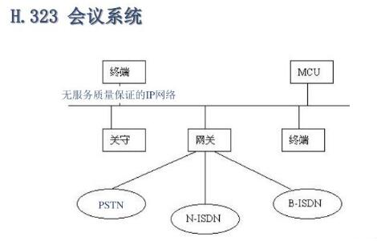

视频会议系统的技术原理
-
 媒体报道
媒体报道
- 2017-08-18
媒体报道
视频会议系统就是利用先进的互联网通讯技术，实现两个及两个以上地区的个人或群体，通过电话线和网线等载体，将人物的静、动态图像、语音、文档、图片等各种资料分送到各个用户的计算机上，使得在地理上分散的用户可以共聚一处，通过图形、声音等多种方式交流信息，增加双方对内容的理解能力。
视频会议系统采用目前最先进的网络通讯技术，适用于视频会议的网络技术标准有H.320协议、H.323协议、H.324协议和H.264协议。
H.320协议（用于ISDN上的群视频会议）
H.320，主要针对N-ISDN（Narrow-Integrated Services Digital Network，窄带综合业务数字网），它能够满足和适应电路交换的特性，通常应用于VSAT、DDN、ISDN等电路交换网络中。
电路交换的优点是面向连接、传输速率和时延稳定、误码率低，这些优点使得视频会议的质量得到保证。但它的缺点是连接固定，除ISDN是可以进行拨号外，其他网络的应用都必须进行点对点的永久连接，带宽利用率较低，开放性差，设置连接也不方便。
H.323协议（用于局域网上的桌面视频会议）
H.323协议，主要负责呼叫控制、媒体编码、管理控制、网络安全等。以它为标准构建的IP电话网能很容易地与传统PSTN电话网兼容，从这点上看，H.323更适合于构建电话到电话的电信级大网。
H.323一共定义了四种部件：终端，网关，网守和多点控制单元。利用它们，H.323可以支持音频、视频和数据的点到点或点到多点的通信。
H.324（用于电话网上的视频会议）
H.324协议最主要的特点在于，在声音和图像的质量未受到多大影响的前提下，大幅度地降低了数据传送量，从而解决了网络带宽有限的问题。
H.264（高度压缩数字视频编解码器标准）
H.264是在MPEG-4技术的基础之上建立起来的，其编解码流程主要包括5个部分：帧间和帧内预测（Estimation）、变换（Transform）和反变换、量化（Quantization）和反量化、环路滤波（Loop Filter）、熵编码（Entropy Coding）。
H.264标准的主要目标是：与其它现有的视频编码标准相比，在相同的带宽下提供更加优秀的图象质量。通过该标准，在同等图象质量下的压缩效率比以前的标准（MPEG2）提高了2倍左右。
在这四大协议中，其中H.323协议成为目前应用最广最通用的协议标准，而H.264是目前最先进的网络音视频编解码技术。
除此之外，还有一种新兴的云视频会议系统。云视频会议是以云计算为核心，服务提供商建设云计算中心，采用公有云或混合云部署方式，让企业用户通过现有Internet即可实现跨地域多方数视频沟通。
会畅云视频会议系统就是其中的佼佼者，它有先进的视频编码技术，可以自动适应各种带宽，调整音视频的最佳效果。除此之外，它还有许多实用的小功能，可以让参会者积极地参加会议。